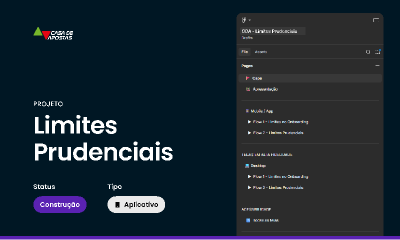
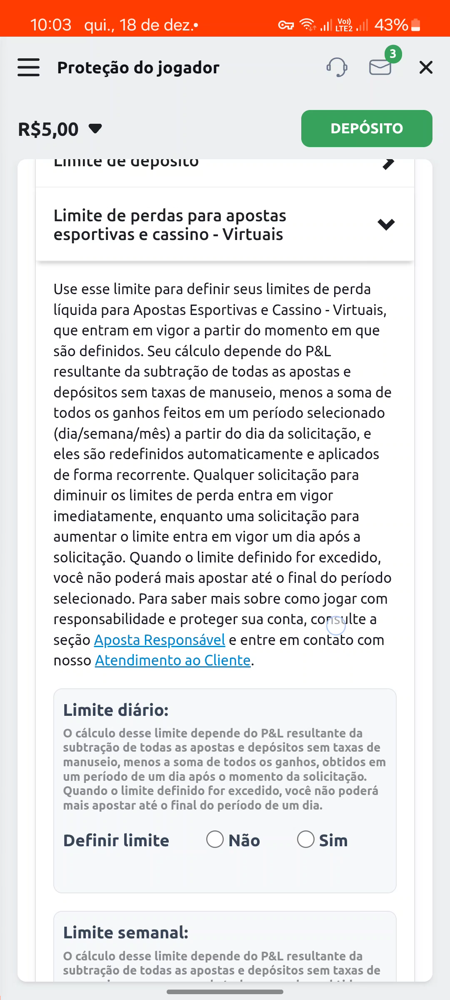
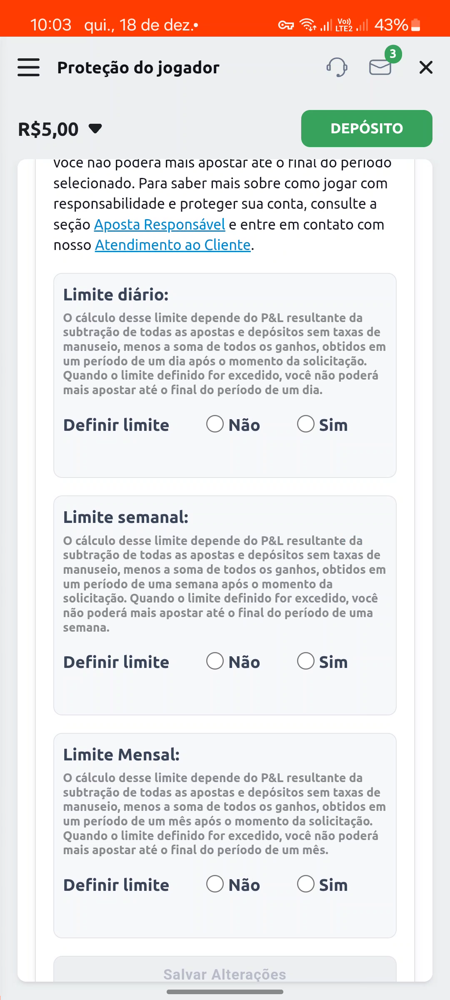

Redesign do Fluxo de Autoexclusão & Proteção Financeira
A conversão de uma obrigação regulatória compulsória para licenciamento nacional em uma experiência ética de acolhimento. Como invertemos a hierarquia de CTAs e vetamos padrões escuros no onboarding.

1. O Contexto & A Fricção Regulamentar
Com a regulamentação do mercado de apostas de quota fixa no Brasil pelo Ministério da Fazenda, a Portaria SPA/MF nº 1.231 determinou que todas as operadoras autorizadas oferecessem mecanismos ativos e permanentes de Jogo Responsável.
O estado anterior da plataforma possuía uma falha crítica de experiência: a única saída oferecida ao apostador em crise era um botão único e nuclear de encerramento definitivo de conta. Não existia meio-termo, acolhimento ou controle preventivo graduado.
2. Auditoria Comparativa em 6 Operadoras
Antes de prototipar qualquer tela, realizei um re-benchmarking rigoroso gravando os fluxos reais de 6 plataformas líderes de mercado: Bet365, Betano, Superbet, EstrelaBet, Betnacional e Bet7k.
Achados Críticos de Benchmark:
- A maioria dos concorrentes escondia a opção de autoexclusão atrás de 4 a 5 níveis de menus (padrão escuro deliberado).
- Pouquíssimas plataformas ofereciam o cálculo transparente de perdas líquidas (P&L: Apostas menos Ganhos).
- A alteração de limites para valores mais restritivos costumava sofrer atrasos injustificados de processamento.
3. Decisões Estratégicas de Interface
A. Inversão da Hierarquia de CTAs
Em vez de incentivar o encerramento permanente (que gera churn evitável e frustração), a ação primária destacada tornou-se a Pausa Temporária Consciente (1, 7 ou 30 dias). O encerramento definitivo foi preservado como um fluxo secundário com confirmação em duas etapas para evitar cliques acidentais em momentos de frustração.
B. Veto a Padrões Escuros no Onboarding (Flow 1)
Ao integrar os limites de depósito no cadastro inicial, a liderança de negócio sugeriu pré-selecionar valores altos por padrão. Vetei ativamente o pré-preenchimento, garantindo que o usuário tivesse inputs vazios com placeholders neutros, blindando a ética da interface contra autuações da SPA.
C. Regra de Fricção Assimétrica (Flow 2)
Reduções de limite entram em vigor imediatamente. Solicitações para aumentar limites entram em período de carência de 24 horas, exigindo reconfirmação consciente do usuário, conforme estipulado pela legislação.
4. Telas em Alta Fidelidade (Proteção do Jogador)
Telas reais desenhadas para mobile-first (1080×2400) com cálculo de P&L, controles de limite diário, semanal e mensal, e conformidade de contraste WCAG AA:

Tela de definição de limite de perdas líquidas (Apostas vs Ganhos) com seletor Diário/Semanal.

Controles graduados de tempo e depósitos com regras de carência regulatória.